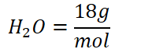
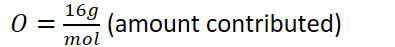
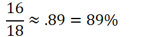
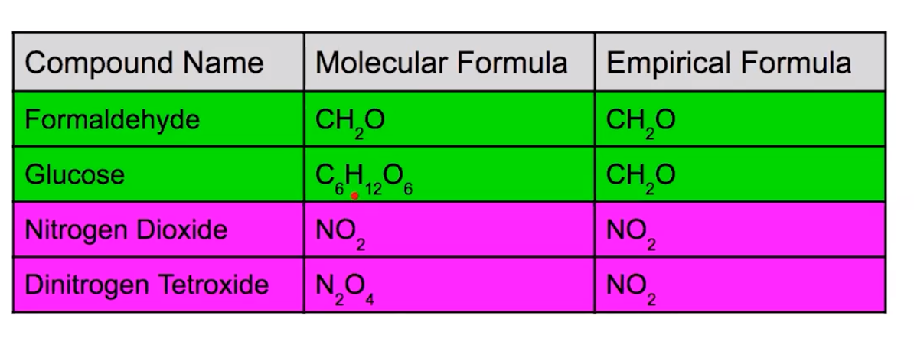

All pure substances have a fixed composition
Elements present and the ratio of these elements is the same for every sample of the compound
Example: NaCl: 1:1 ratio of Na and Cl, ALWAYS
This means that the mass ratio between the elements is the same:
To find percent composition of a particular element:
Find total molar mass of the substance
Find the amount contributed by the specific element
Amount contributed / molar mass
{width="2.2604166666666665in" height="0.3541666666666667in"}
{width="3.6145833333333335in" height="0.3541666666666667in"}
{width="2.0104166666666665in" height="0.65625in"}
{width="4.114583333333333in" height="0.4895833333333333in"}
{width="2.6041666666666665in" height="0.6458333333333334in"}
{width="4.65625in" height="0.3541666666666667in"}
89% Oxygen
11%/ Hydrogen
Different substances can have the same percent composition:
{width="3.4166666666666665in" height="0.3541666666666667in"}
Same ratio of nitrogen to oxygen: 1:2
Therefore, will have same percent composition
The lowest whole number ratio of atoms of each element is its empirical formula
The actual number of atoms of each element in a compound is its chemical (molecular) formula
{width="6.03125in" height="2.2916666666666665in"}
To get an empirical formula from obtained data:
If given masses of elements (or percent masses):
Convert masses to moles
Divide by the lowest whole number of moles
Using the given ratio write the formula: